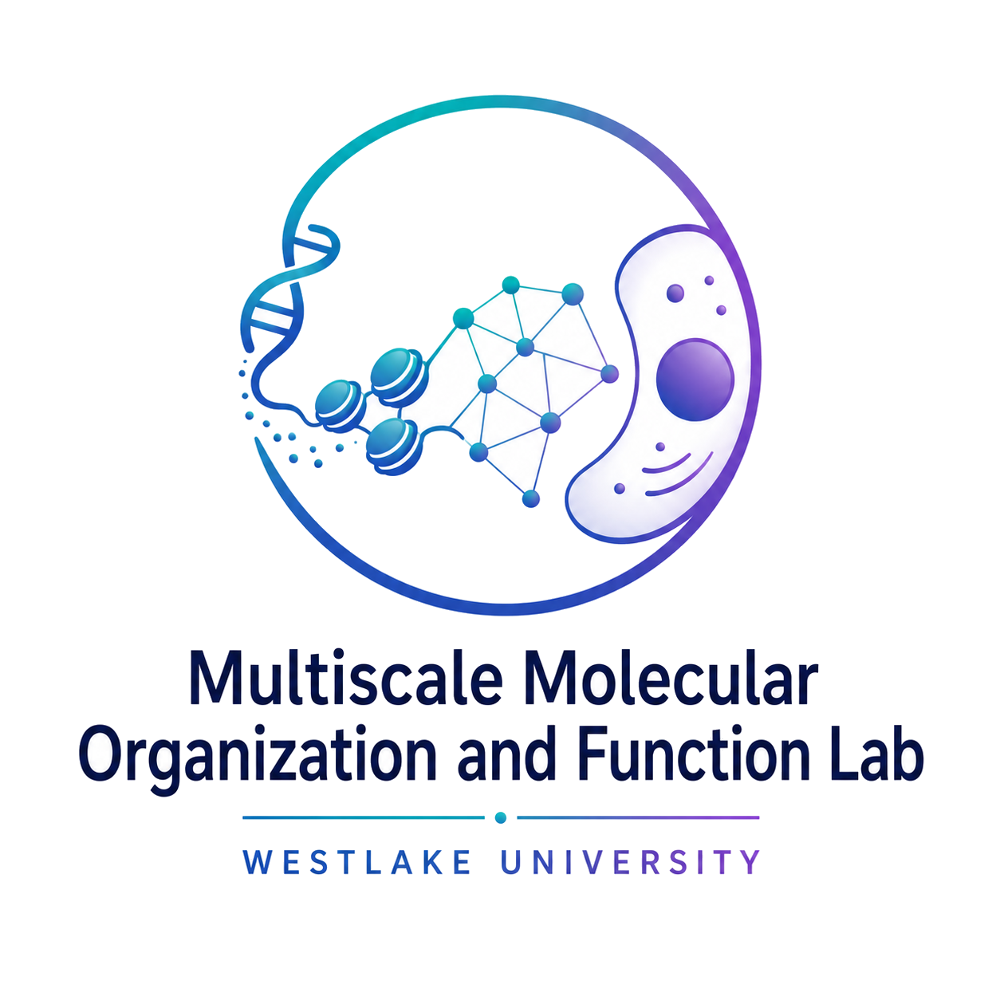

Zhou Lab
{{ T.navTagline[lang] }}
{{ T.navHome[lang] }}
{{ T.navResearch[lang] }}
{{ T.navPub[lang] }}
{{ T.navPeople[lang] }}
{{ T.navNews[lang] }}
{{ T.navGallery[lang] }}
EN
/
中
{{ T.navJoin[lang] }}
{{ T.heroEyebrow[lang] }}
{{ T.heroTitle[lang] }}
{{ T.heroBody[lang] }}
{{ T.heroBtn1[lang] }}
{{ T.heroBtn2[lang] }}
{{ T.heroBadgeNucleus[lang] }}
↓
{{ T.heroBadgeNucleosome[lang] }}
{{ T.heroBadgeSub[lang] }}
{{ T.scaleEyebrow[lang] }}
{{ T.scaleNucleus[lang] }}≈2000 nm
→
{{ T.scaleCondensate[lang] }}≈200 nm
→
{{ T.scaleFiber[lang] }}≈20 nm
→
{{ T.scaleNucleosome[lang] }}≈1 nm DNA
{{ T.methodCryoTitle[lang] }}
{{ T.methodCryoDesc[lang] }}
{{ T.methodAiTitle[lang] }}
{{ T.methodAiDesc[lang] }}

{{ T.methodBiochemTitle[lang] }}
{{ T.methodBiochemDesc[lang] }}

{{ T.methodCellTitle[lang] }}
{{ T.methodCellDesc[lang] }}
{{ T.studyHeading[lang] }}
{{ T.studyAllLink[lang] }}![{{ T.theme3ImgAlt[lang] }}](uploads/from%20structure%20to%20cell-fate.png)
{{ T.piEyebrow[lang] }}
{{ T.piQuote[lang] }}
{{ T.piName[lang] }}
{{ T.piAffiliation[lang] }}
{{ T.newsHeading[lang] }}
2026 · 07{{ T.newsItem1[lang] }}
2026 · 07{{ T.newsItem2[lang] }}
2026 · 07{{ T.newsItem3[lang] }}
{{ T.joinTeaserHeading[lang] }}
{{ T.joinTeaserBody[lang] }}
{{ T.jobPhdShort[lang] }}{{ T.openArrow[lang] }}
{{ T.jobPostdocRaShort[lang] }}{{ T.openArrow[lang] }}
{{ T.jobInternShort[lang] }}{{ T.openArrow[lang] }}
{{ T.researchEyebrow[lang] }}
{{ T.researchH1[lang] }}
{{ T.researchIntro[lang] }}
{{ T.toolkitEyebrow[lang] }}
{{ T.toolkitHeading[lang] }}
{{ T.toolCryoName[lang] }}
{{ T.toolCryoDesc[lang] }}
{{ T.toolAiName[lang] }}
{{ T.toolAiDesc[lang] }}
{{ T.toolReconName[lang] }}
{{ T.toolReconDesc[lang] }}
{{ T.toolCellName[lang] }}
{{ T.toolCellDesc[lang] }}
{{ T.pubEyebrow[lang] }}
{{ T.pubH1[lang] }}
{{ T.pubIntro[lang] }}
ORCID · 0000-0002-7788-0806 ↗2025
Multiscale structure of chromatin condensates explains phase separation and material properties
Zhou H, Huertas J, Maristany MJ, Russell K, Hwang JH, Yao R, Hutchings J, Shiozaki M, Zhao X, Doolittle LK, Gibson BA, Riggi M, Espinosa JR, Yu Z, Villa E, Collepardo-Guevara R, Rosen MK. · Science, 2025, 390, eadv6588.
2025
ExoSloNano: multimodal nanogold labels for identification of macromolecules in live cells and cryo-electron tomograms
Young LN, Sherrard A, Zhou H, Shaikh F, Hutchings J, Riggi M, Narasimhan M, Flaherty WA, Bennett EJ, Rosen MK, Giraldez AJ, Villa E. · Nature Methods, 2025, 23, 131–142.
2025
Quantitative spatial analysis of chromatin biomolecular condensates using cryo-electron tomography
Zhou H, Hutchings J, Shiozaki M, Zhao X, Doolittle LK, Yang S, Yan R, Jean N, Riggi M, Yu Z, Villa E, Rosen MK. · Proc. Natl. Acad. Sci. USA, 2025, 122, e2426449122.
2021
Charge segregation in the intrinsically disordered region governs VRN1 and DNA liquid-like phase separation robustness
Wang Y*, Zhou H*, Sun X, Huang Q, Li S, Liu Z, Zhang C, Lai L. · J. Mol. Biol., 2021, 433, 167269. (*co-first)
2019
Mechanism of DNA-induced phase separation for transcriptional repressor VRN1
Zhou H, Song Z, Zhong S, Zuo L, Qi Z, Qu L-J, Lai L. · Angew. Chem. Int. Ed., 2019, 58, 4858–4862.
{{ T.peopleEyebrow[lang] }}
{{ T.peopleH1[lang] }}
{{ T.peopleIntro[lang] }}
{{ T.piEyebrow[lang] }}
{{ T.piName[lang] }}
{{ T.piEyebrow[lang] }} · {{ T.piAffiliation[lang] }}
{{ T.piBioText[lang] }} {{ T.piBioPlaceholder[lang] }}
{{ T.labMembersHeading[lang] }}
{{ T.thisCouldBeYouTitle[lang] }}
{{ T.thisCouldBeYouBody[lang] }}
{{ T.seeHowToJoin[lang] }}{{ T.newsPageEyebrow[lang] }}
{{ T.newsPageH1[lang] }}
Jul 2026
{{ T.newsPageItem1Title[lang] }}
{{ T.newsPageItem1Body[lang] }}
Jul 2026
{{ T.newsPageItem2Title[lang] }}
{{ T.newsPageItem2Body[lang] }}
Jul 2026
{{ T.newsPageItem3Title[lang] }}
{{ T.newsPageItem3Body[lang] }}
{{ T.galleryEyebrow[lang] }}
{{ T.galleryH1[lang] }}
{{ T.galleryIntro[lang] }}
{{ T.joinEyebrow[lang] }}
{{ T.joinH1[lang] }}
{{ T.joinIntro[lang] }}
{{ T.jobPhdTitle[lang] }}
{{ T.jobPhdDesc[lang] }}
{{ T.jobPostdocTitle[lang] }}
{{ T.jobPostdocDesc[lang] }}
{{ T.jobStaffTitle[lang] }}
{{ T.jobStaffDesc[lang] }}
{{ T.jobRaTitle[lang] }}
{{ T.jobRaDesc[lang] }}
{{ T.jobInternTitle[lang] }}
{{ T.jobInternDesc[lang] }}
{{ T.ctaHeading[lang] }}
{{ T.ctaBody[lang] }}
{{ T.footerCopyright[lang] }}